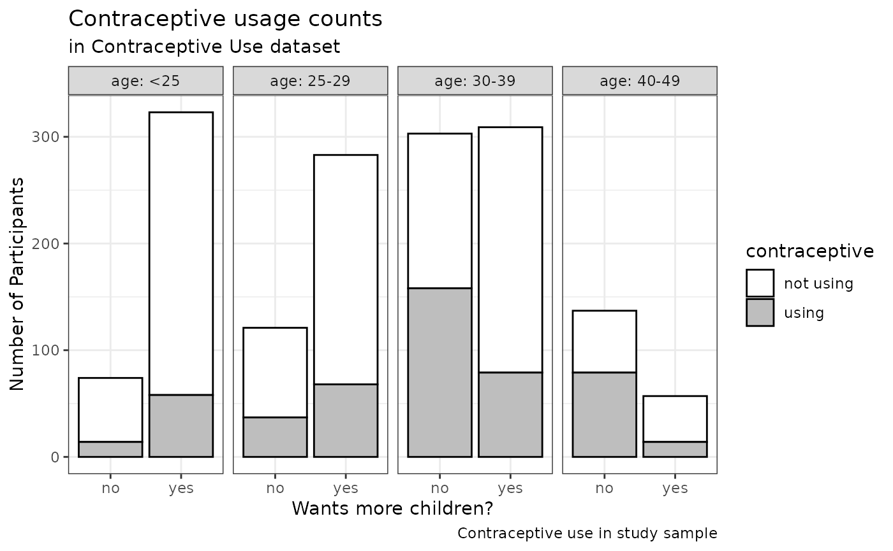

session_lab.RmdLearning Objectives
tableone packageggplot2 packageExercises
Load the data from http://data.princeton.edu/wws509/datasets/#cuse. From this page:
These data show the distribution of 1607 currently married and fecund women interviewed in the Fiji Fertility Survey, according to age, education, desire for more children and current use of contraception.
Unlike in the lecture, here I demonstrate reading the dataset using the readr package. It identifies some warnings because the header of this file has extra spaces at the end which appear like an extra column, making it appear like the dataset has 6 columns instead of 5. But the dataset reads with 5 columns as we want it to anyways, because I chose to skip the blank column 6 in the graphical interface (which added the code X6 = col_skip() below). readr is good for identifying problems like this in text data files.
# traditional method for loading data: # cuse <- read.table("cuse.dat", header=TRUE) # Using readr package with "File - Import Dataset" and manually setting factor levels. # Note, you don't have to write all this code by hand! It was produced by the File - Import Dataset helper. library(readr) cuse <- read_table2("cuse.dat", col_types = cols( age = col_factor(levels = c("<25", "25-29", "30-39", "40-49")), education = col_factor(levels = c("low", "high")), wantsMore = col_factor(levels = c("no", "yes")), X6 = col_skip() ) )
## Warning: Missing column names filled in: 'X6' [6]## Warning: 16 parsing failures.
## row col expected actual file
## 1 -- 6 columns 5 columns 'cuse.dat'
## 2 -- 6 columns 5 columns 'cuse.dat'
## 3 -- 6 columns 5 columns 'cuse.dat'
## 4 -- 6 columns 5 columns 'cuse.dat'
## 5 -- 6 columns 5 columns 'cuse.dat'
## ... ... ......... ......... ..........
## See problems(...) for more details.summary(cuse)
## age education wantsMore notUsing using
## <25 :4 low :8 no :8 Min. : 8.00 Min. : 4.00
## 25-29:4 high:8 yes:8 1st Qu.: 31.00 1st Qu.: 9.50
## 30-39:4 Median : 56.50 Median :29.00
## 40-49:4 Mean : 68.75 Mean :31.69
## 3rd Qu.: 85.75 3rd Qu.:49.00
## Max. :212.00 Max. :80.00Here’s a simple way to create the summary table that is required for your assignments, and for any epidemiological analysis you do. The text format is fine, and convenient for moving into another pubication or presentation document. See the tableone vignette for more complex usage and for instructions on how to export directly to an Excel or Word table.
# Note the use of `tableone::` to specify that `CreateTableOne` comes from the # tableone library without actually loading the library. tableone::CreateTableOne(data = cuse)
##
## Overall
## n 16
## age (%)
## <25 4 (25.0)
## 25-29 4 (25.0)
## 30-39 4 (25.0)
## 40-49 4 (25.0)
## education = high (%) 8 (50.0)
## wantsMore = yes (%) 8 (50.0)
## notUsing (mean (SD)) 68.75 (56.28)
## using (mean (SD)) 31.69 (25.54)Table 1: characteristics of the contraceptive use dataset
Excerpted from the seminal paper by Hadley Wickam
Happy families are all alike; every unhappy family is unhappy in its own way - Leo Tolstoy
To summarize, in tidy data: 1. Each variable forms a column. 2. Each observation forms a row. 3. Each type of observational unit forms a table.
Messy data is any other arrangement of the data. (according to Hadley and the tidyverse!)
First let’s do some work on the data to get it in shape for plotting. I do these one step at a time to show what’s happening, but you could also do chain these steps all together using the pipe operator (%>%).
First, group by age and whether the participant reports wanting more children, and sum the number wanting or not wanting more children in each of these groups. Also rename “notUsing” to “not using” to make a nicer legend later.
library(tidyverse)
## ── Attaching packages ─────────────────────────────────────── tidyverse 1.3.0 ──## ✔ ggplot2 3.3.2 ✔ dplyr 1.0.2
## ✔ tibble 3.0.3 ✔ stringr 1.4.0
## ✔ tidyr 1.1.1 ✔ forcats 0.5.0
## ✔ purrr 0.3.4## ── Conflicts ────────────────────────────────────────── tidyverse_conflicts() ──
## ✖ dplyr::filter() masks stats::filter()
## ✖ dplyr::lag() masks stats::lag()cusebyage <- group_by(cuse, age, wantsMore) %>% summarise(using = sum(using), "not using" = sum(notUsing))
## `summarise()` regrouping output by 'age' (override with `.groups` argument)print(cusebyage)
## # A tibble: 8 x 4
## # Groups: age [4]
## age wantsMore using `not using`
## <fct> <fct> <dbl> <dbl>
## 1 <25 no 14 60
## 2 <25 yes 58 265
## 3 25-29 no 37 84
## 4 25-29 yes 68 215
## 5 30-39 no 158 145
## 6 30-39 yes 79 230
## 7 40-49 no 79 58
## 8 40-49 yes 14 43Next, pivot this into a longer table by putting the “using” and “not using” columns into a single column called “contraceptive”. This pivot is necessary to make the data “tidy”.
cusebyage <- pivot_longer(cusebyage, cols = using:"not using", values_to = "n", names_to = "contraceptive") cusebyage
## # A tibble: 16 x 4
## # Groups: age [4]
## age wantsMore contraceptive n
## <fct> <fct> <chr> <dbl>
## 1 <25 no using 14
## 2 <25 no not using 60
## 3 <25 yes using 58
## 4 <25 yes not using 265
## 5 25-29 no using 37
## 6 25-29 no not using 84
## 7 25-29 yes using 68
## 8 25-29 yes not using 215
## 9 30-39 no using 158
## 10 30-39 no not using 145
## 11 30-39 yes using 79
## 12 30-39 yes not using 230
## 13 40-49 no using 79
## 14 40-49 no not using 58
## 15 40-49 yes using 14
## 16 40-49 yes not using 43See the Data Visualization Cheatsheet for help on enhancing this barplot.
Now, make a sort of fancy greyscale barplot using ggplot2. You can make a nice plot without using nearly so many options, but I want to demonstrate the flexibility of making a bar plot with ggplot2.
ggplot(cusebyage, aes(x = wantsMore, weight = n, fill = contraceptive)) + # create a stacked bar plot, where the values provided are counts/frequencies, # and use black outlines for the bars. geom_bar(position = "stack", stat = "count", color = "black") + # use facet_grid to separate the plots by age group facet_grid(.~age, labeller = label_both) + labs(title = "Contraceptive usage counts", subtitle = "in Contraceptive Use dataset", caption = "Contraceptive use in study sample") + xlab("Wants more children?") + ylab("Number of Participants") + # there are lots of scale_fill_* options for automatic color schemes, but I # just want to specify the colors manually here. scale_fill_manual(values=c("white", "grey")) + theme_bw()

Figure 1: contraceptive use in the study sample. Bar plot is organized by age group and stacked by self-report of whether participant wants more children. The fraction of women wanting more children decreases with age, becoming a minority in the 40-49 age group. One unexpected observation in this bar chart is that in the <25 age group, those reporting wanting more children appear more likely to report using contraceptives. Is this the case? One way to make this more visually clear would be to use percentages, instead of counts, on the vertical scale. Try this, by changing weight = n to weight = percent to use the “percent” column as heights instead of the “n” column. While you’re at it, change the y label to reflect this change.
Note: The caption option in ggplot2 is suitable for smaller, embedded captions. But for publication the caption usually needs to be in separated text.
Here’s some code to calculate the percentages.
cusebyage <- group_by(cusebyage, age, wantsMore) %>% mutate(percent = n / sum(n) * 100) cusebyage
## # A tibble: 16 x 5
## # Groups: age, wantsMore [8]
## age wantsMore contraceptive n percent
## <fct> <fct> <chr> <dbl> <dbl>
## 1 <25 no using 14 18.9
## 2 <25 no not using 60 81.1
## 3 <25 yes using 58 18.0
## 4 <25 yes not using 265 82.0
## 5 25-29 no using 37 30.6
## 6 25-29 no not using 84 69.4
## 7 25-29 yes using 68 24.0
## 8 25-29 yes not using 215 76.0
## 9 30-39 no using 158 52.1
## 10 30-39 no not using 145 47.9
## 11 30-39 yes using 79 25.6
## 12 30-39 yes not using 230 74.4
## 13 40-49 no using 79 57.7
## 14 40-49 no not using 58 42.3
## 15 40-49 yes using 14 24.6
## 16 40-49 yes not using 43 75.4Now, can you repeat the barplot, but showing percentages instead of counts?